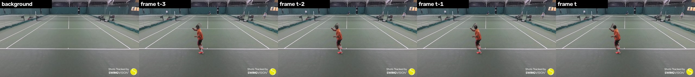
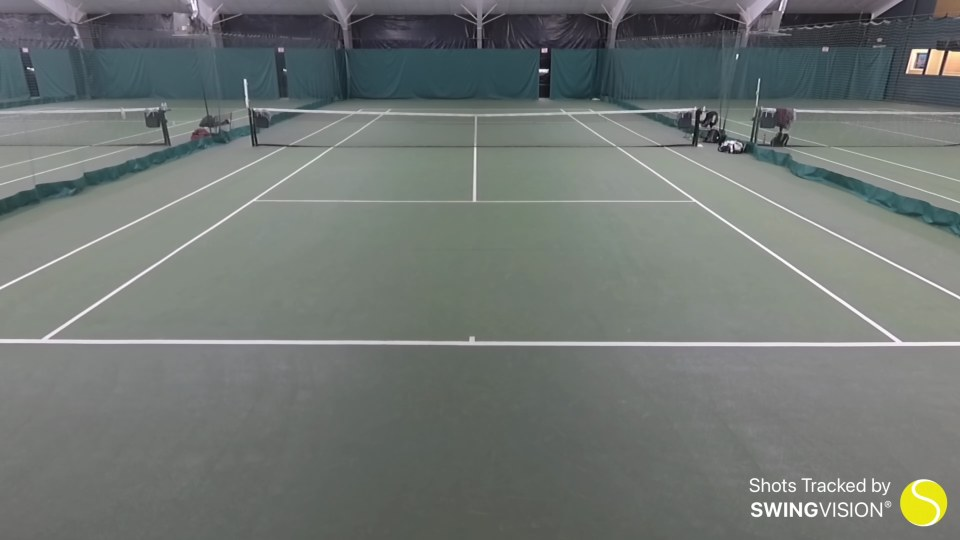
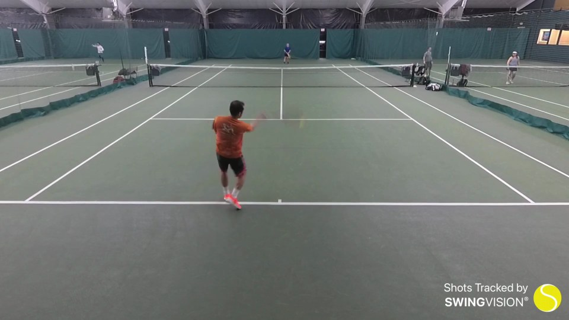
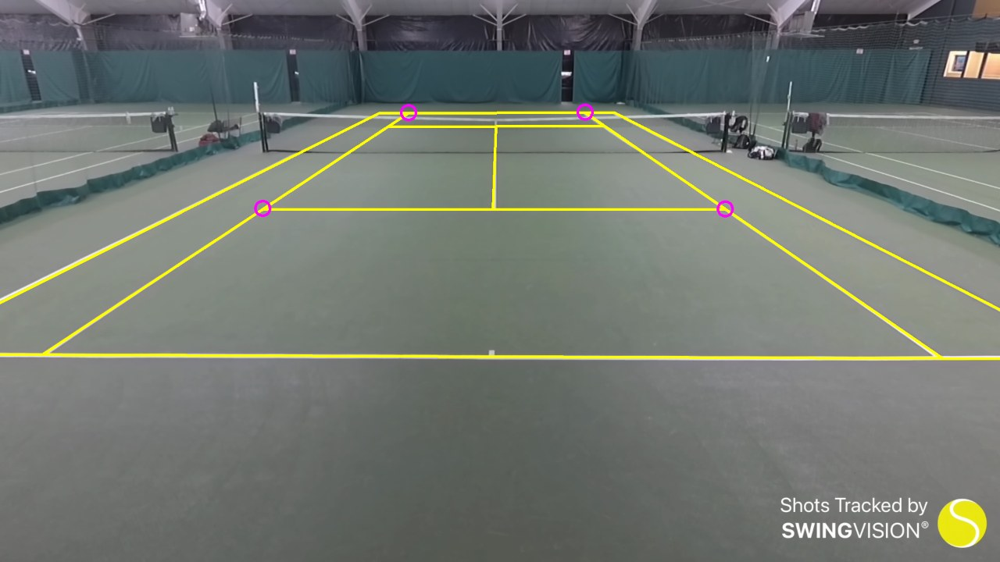
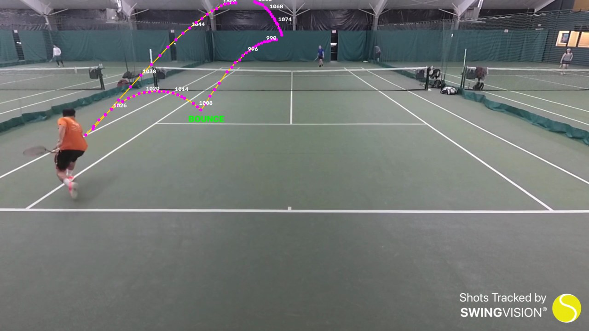
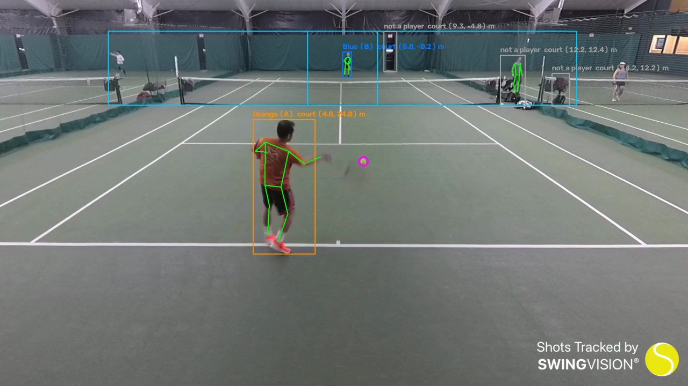
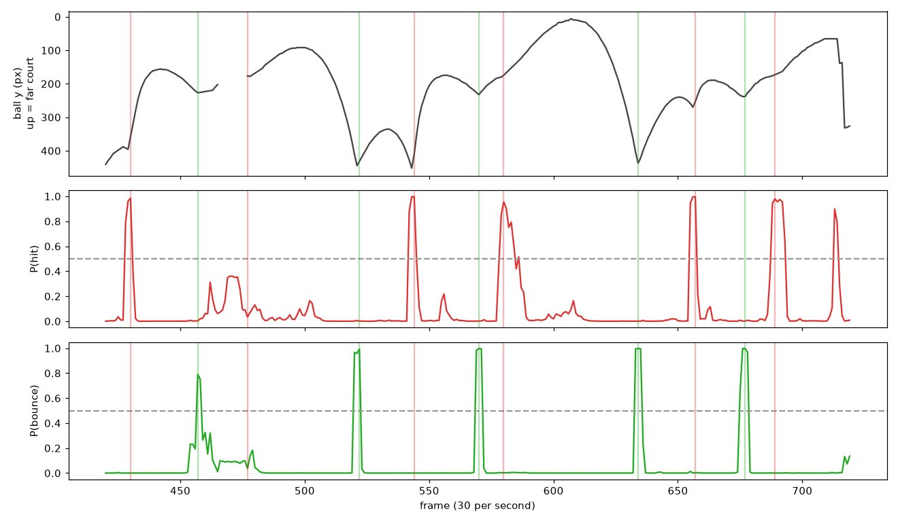
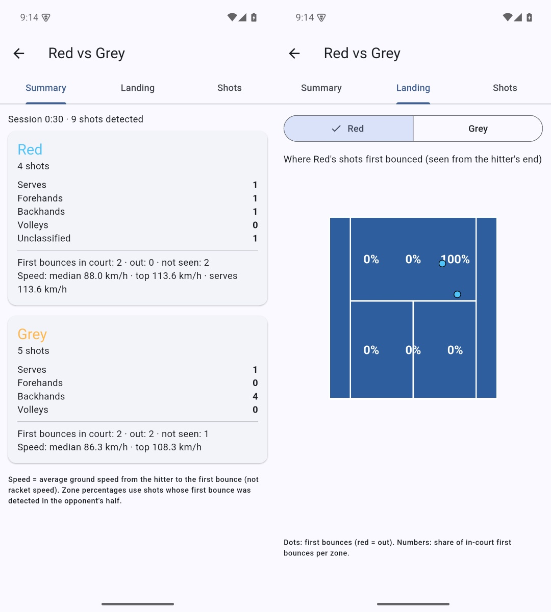
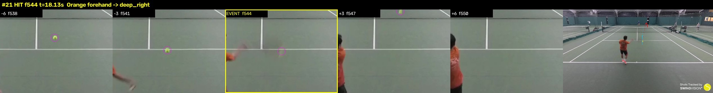

How the analysis works — the complete workflow, from video frames to the player report
This document explains, step by step, what happens to a tennis video after it is recorded: which frames we look at, how the court is measured, how the ball and the players are found, how hits and bounces are detected, how we decide who hit, which stroke it was, where the ball landed and how fast it was. It also lists every model used, what we train ourselves, how we measure accuracy, what the frame-by-frame review of test video 1 showed, and what we will improve next and how.
It is written so that someone new to the project can follow it. Technical details (exact numbers and rules) are included, because they are what the system really does — they come directly from the code at the commit listed below.
Version 1 · 29 September 2026 · engine commit efe50d2 (pipeline unchanged since aa3af60)
Example figures are from test video 1 (“Orange vs Blue”, 60 s, 1920×1080, 30 fps), server session 3ce88198.
Contents
What the system does
The big picture: app → server → engine → report
Recording requirements (camera position)
Which frames we look at (frame selection)
Step 1 – Court calibration: from pixels to metres
Step 2 – Ball tracking
Step 3 – Player detection and body pose
Step 4 – Player identity (who is who, across changeovers)
Step 5 – Hit and bounce detection
Step 6 – Clean-up rules after detection
Step 7 – Who hit the ball
Step 8 – Stroke type (serve, forehand, backhand, volley, overhead)
Step 9 – Landing position, region and in/out
Step 10 – Ball speed
Step 11 – The report, the app, and corrections
All models used
Do we train our own models?
How we measure accuracy
What the frame-by-frame review of test 1 showed
What we will improve, and how
Test plan: making it work for any video
Glossary
1. What the system does
A player puts a phone on a fixed stand behind one baseline and records a singles match or practice. After the session the video is analysed and every player gets a report:
Shots: every shot with time, player, and stroke type (serve, forehand, backhand, volley, overhead).
Landing: where the first bounce of each shot landed — one of six regions of the opponent's half (deep/short × left/centre/right), or out.
Speed: an average ball speed per shot.
Identity: the two players are kept apart for the whole session, including when they change ends.
Everything is computed from the video alone: no sensors, no second camera, no internet service.
The two things that make this hard
1. The camera sees a flat picture of a 3-D world.
From one camera we know exactly where things are on the ground (feet, bounces), because the court floor is a known flat plane. For a ball in the air we only know the direction it is in, not its height. Many rules below exist because of this.
2. The far player is small and the near player is big.
In a 1080p video the near player is ~250 px tall and the far player ~50 px. The same distance in pixels means very different distances in metres, and the ball flying over the far court often appears to “touch” the far player in the image. Several errors found in the review come from this.
What happens, in one sentence per step
#
Step
What it produces
1
Court calibration
A mapping between image pixels and court metres
2
Ball tracking
Ball position (x, y) in every frame, or “not seen”
3
Player detection + pose
Every person's box, 17 body points, and court position in metres
4
Identity
Which person is player A and which is player B, in every frame
5
Hit / bounce detection
Frames where the ball was hit or bounced
6
Clean-up rules
Removes impossible events, adds missing hits implied by bounces
7
Hitter
Who hit each shot
8
Stroke type
Serve / forehand / backhand / volley / overhead
9
Landing
Bounce point in metres, region, in/out
10
Speed
Average km/h from hitter to bounce
11
Report
Per-player totals and percentages, shown in the app
2. The big picture: app → server → engine → report
The phone is too slow to run these models on a full match (tested: even the smallest ball model was far from real time on the phone). So the phone records and uploads, and a server analyses. Today the server is the Mac; later it will be the RTX laptop (NVIDIA GPU) and optionally a cloud GPU. The same code runs on all of them.
A session, from the user's side
New session: enter the two names, tick which player is near the camera at the start (this seeds identity), and each player's handedness.
Upload: the video is sent in 8 MB pieces; if the connection drops, the upload resumes where it stopped.
Court setup: the app shows a picture of the empty court and the user drags 4 markers onto known court points. The server snaps them to the painted lines and returns the fitted court; the user confirms.
Analyse: the job is queued. Progress and remaining time are shown (ball 45 %, pose 45 %, analysis 10 % of the bar).
Report: summary per player, landing map, and a shot list. Each shot can be watched and corrected (change player or stroke, delete a false shot, add a missed one); the server recomputes the report and keeps the corrections as labels for training.
Files of one session (on the server)
File
Content
meta.json
names, which side A starts on, handedness, quality, status
video.mp4
the uploaded recording
background.jpg
median background image (players removed) used for court setup
calibration.json
court ↔ image mapping, markers, quality numbers
ball.json
ball x, y, confidence per frame
pose.json
people per analysed frame: box, score, court position, 17 body points
report.json
players, shots, events, per-frame identity
corrections.json
user's edits from the shot editor
Processing time today (Mac, Apple GPU): the 60-s test video took 216 s in total (ball tracker ≈ 8.5 frames per second; pose runs in parallel on the CPU). A full hour of video would take about 3–4 hours on the Mac; the RTX laptop is expected to be several times faster.
3. Recording requirements (camera position)
The system is designed and tested for one camera setup. All geometry rules assume it.
Requirement
Why
Phone fixed (tripod or fence mount), not moving during the session
Calibration is done once; the court must stay at the same pixels. The background image is a median over the whole video.
Behind one baseline, centred, as high as practical (2–3 m is ideal)
“Near” and “far” player are defined by this. Higher = less overlap between the far player and the ball.
Whole court visible, including both baselines and both singles sidelines
Bounces and players outside the picture cannot be measured.
Landscape, 1080p, 30 fps or more
The ball is only a few pixels wide; at 30 fps a fast ball moves ~1 m between frames.
Singles, two players
Identity logic assumes exactly two players.
Tested so far on: indoor courts with a fixed camera behind the baseline (three different public amateur videos with different heights and lenses). Not supported: corner cameras, moving/hand-held cameras, broadcast TV views with cuts (cuts are detected and handled only for identity).
4. Which frames we look at (frame selection)
A 30 fps video has 1,800 frames per minute. Different steps need different amounts of frames. This table is the complete list:
Used for
Which frames
Why this choice
Court setup picture
31 frames spread evenly over the whole video → pixel-wise median
Players and ball are never at the same place for long, so the median shows the empty court. Court lines are then clean for line snapping.
Ball tracker background
48 frames spread over each 120-s segment → median, at 512×288
The tracker compares each frame with the empty court; a fresh background every 2 minutes follows slow light changes.
Ball tracking
Every frame. Each prediction sees the background + the 4 most recent frames (t-3 … t)
The ball moves fast; skipping frames would miss hits and bounces. Seeing several frames lets the model use motion, not just colour.
People + pose
Every 3rd frame (“standard”), every frame in “best” quality
People move much slower than the ball; every 3rd frame (10 per second) is enough and is 3× faster.
Clothing colours (identity)
Same frames as pose
Needs the pose to know where the shirt and shorts are.
Scene-cut detection
Every frame, shrunk to 160×90 grey
If the average pixel change between two frames is > 25 (of 255), it is a cut (edited videos). Player tracks are broken at cuts.
Hit/bounce features
Every frame, looking ±1 to ±8 frames around it
A hit or bounce is a change of motion; we compare the ball's motion just before and just after each frame.
Review PDF
Frames −6, −3, 0, +3, +6 around every event
Enough to see the contact or bounce with your own eyes.

What the ball tracker sees for one prediction: the median background and the last 4 frames, all resized to 512×288 pixels.
5. Step 1 – Court calibration: from pixels to metres
A tennis court has fixed, known dimensions. If we know where four court points are in the picture, we can compute a homography: a mathematical mapping between any point on the court floor (in metres) and its pixel in the image, in both directions.

Median background: the empty court (players removed automatically).

A normal frame of the same video, for comparison.
How it is done
User places 4 markers roughly on known points (e.g. the two far singles corners and the two ends of the near service line). Any 4 of 14 named points can be used.
A first homography is computed from these 4 points.
Line snapping: every court line (baselines, sidelines, service lines, centre line — 9 lines) is projected into the image. Near each projected line we look for white paint pixels (bright, low colour saturation, brighter than their surroundings) in a band of ±12 pixels and fit a straight line through them with a robust fit (outliers ignored).
Fitted lines are intersected to get precise corner points, even if a corner is outside the picture.
A new homography is fitted from all corners (RANSAC). Because the net can look like the far baseline in low views, three candidate fits are tried (all points / near half only / far half only) and we keep the one whose projected lines lie on the most white paint (“line support”).
Steps 3–5 are repeated 3 times.

Test 1: the 4 markers the user placed (magenta) and the fitted court lines (yellow). Result: 9 corner points used, average error 1.8 pixels, 88 % of the projected line length lies on white paint.
Quality check
The calibration is accepted when at least 4 corners were used, the average reprojection error is below 12 pixels, and line support is above 60 %. Otherwise the app asks the user to adjust the markers.
Court coordinates used everywhere
Metres. Origin = far-left doubles corner as seen from the camera. x goes across the court (0 → 10.97 m), y goes from the far baseline (0) to the near baseline (23.77 m). The net is at y = 11.885 m. Singles sidelines are at x = 1.37 and 9.60 m; service lines at y = 5.485 and 18.285 m.
Important limitationThe mapping is correct only for points on the ground: a player's feet and a bouncing ball. A ball in the air projected with the same mapping lands at the wrong place (usually much farther away). This is why the review found a “bounce” 39 m outside the court — it was a ball in the air.
6. Step 2 – Ball tracking
Model: TrackNetV3 (checkpoint from the RacketVision research project). It is a neural network designed for small, fast balls in sports video. We use it as published — we did not train it.
How it works
Input: the background image + the 4 latest frames, each resized to 512×288 (15 colour channels in total).
Output: a heat map the size of the input, where each pixel has a value 0–1 = “how likely the ball centre is here”.
Pixels above 0.5 are kept; the largest connected blob is the ball. Its centre is scaled back to the original 1920×1080 pixels. Confidence = mean heat-map value in the blob.
No blob above 0.5 → the ball is “not seen” in that frame.
How it runs
On the GPU (Apple “MPS” on the Mac, CUDA on NVIDIA), 8 frames per batch.
The video is processed in 120-second segments, each in its own process, so memory stays bounded for long matches (a memory leak on the Mac GPU was found and fixed this way).
Output: ball.json = one entry per frame: [x, y, confidence] or empty.

Ball positions (magenta, frame numbers every 6 frames) over ~3 seconds of test 1: Blue's shot bounces in Orange's court (frame 1008), Orange plays a high defensive ball back.
How good it is
In test 1 the ball was found in 1,469 of 1,800 frames (82 %). During rallies it is very reliable. Known weaknesses seen in the review:
It can lock onto another ball lying or rolling on the court (spare balls), jumping between the real ball and the still one.
When the ball is hidden (behind a player's head or body, or the net band) there is a gap; if the gap is exactly at a bounce, the bounce is lost.
It sometimes picks up balls on the neighbouring court.
7. Step 3 – Player detection and body pose
Two pretrained models from the OpenMMLab family, run with ONNX Runtime on the CPU (so they can run in parallel with the ball tracker on the GPU):
Model
Job
Input size
YOLOX-tiny (person detector)
Finds a box around every person
416×416
RTMPose-s (pose model)
Finds 17 body points inside each box: nose, eyes, ears, shoulders, elbows, wrists, hips, knees, ankles — each with a confidence
192×256 per person
How it works
Full frame pass: finds the near player (large) and usually the far player.
Far-court tiles: the far half of the court is cut into 2 overlapping tiles (placed using the calibration) and each tile is run through the detector separately. The far player is then about twice as large at the detector input, so he is found much more reliably. Boxes that touch a tile edge are dropped (they are cut-off pieces of the near player).
Duplicates are merged (non-maximum suppression), and a box mostly inside a larger box is removed (arm/leg detections).
Court filter: the middle of the bottom edge of each box = the feet. The feet are mapped to court metres; only people within the court plus 4 m to the sides and 7 m behind the baselines are kept. This removes spectators and people on neighbouring courts.
The pose model runs on the kept boxes.

Frame 543 of test 1. Cyan: the two far-court tiles. Orange box = player A (Orange), blue box = player B (Blue), with skeletons and court position in metres. Grey = detected people that are not players (other court, door). Magenta circle = ball.
For every kept person we store: box, score, court position (x, y metres), and 17 body points. This is pose.json.
8. Step 4 – Player identity (who is who)
Goal: in every frame, know which detected person is player A and which is player B — even after they change ends, when A is suddenly on the far side. This uses no trained model; it is an algorithm that runs over the whole session.
Remove static objects: things the detector mistakes for people (a door, a bag on a chair) stay at the same pixels for a long time. Any detection whose position and size repeat in at least 15 % of all analysed frames is marked “static” and ignored. Players never stand still that long.
Tracklets: detections in consecutive frames are linked into short tracks by their court position in metres (predicted from their speed; a match must be within 1.2 m + 0.25 m per missing frame). A tracklet ends when the person is lost for more than 8 frames, at a scene cut, or when two detections are almost equally close (we stop rather than guess).
Player tracklets only: a tracklet must be long enough (≥ 0.3 s), its median position must be within the doubles width ± 0.8 m, and it must be mostly inside the court area including the run-off.
Appearance: using the pose, we cut out the shirt (shoulders–hips polygon) and shorts (hips–mid-thigh) and compute a colour histogram (hue, saturation, brightness). Each tracklet gets the median of its clean frames (frames where it does not overlap another person).
Seed: the first frame with exactly one player on each half. The user told us who starts near the camera, so that tracklet is A and the other is B. Their colours become the A and B prototypes.
Assign (repeated 4 times): each tracklet gets the label whose prototype colour is closer (Bhattacharyya distance). Two tracklets that exist at the same time must have different labels; if not, the less certain one is flipped. Prototypes are then recomputed from confident tracklets.
Unknown instead of guessing: if a tracklet's colour is almost equally close to A and B (margin < 0.04), it stays unknown.
Singles completion: if one player is identified in a frame and exactly one other person stands in the playing area on the opposite half, that person is the other player.
Results (hand-checked random frames)
4apx video (21 min, several changeovers): 97.9 % · otJ video (13 min): 94.5 % · MZZ video (13.6 min, held out): 95.2 %. Zero swaps (A never labelled as B) in all three; the remaining misses are frames labelled “unknown”.
Why it generalises: it relies only on court metres (from calibration) and clothing colours measured in the same video, not on any training. It would fail if both players wear the same colours — then it would mostly return “unknown” rather than swap.
9. Step 5 – Hit and bounce detection
A hit or a bounce shows up in the ball track as a sudden change of the ball's motion: it changes direction, speed, or both. We use a trained classifier that looks at the ball's motion around every frame and outputs three probabilities: nothing, hit, bounce.
9.1 Cleaning the ball track
Positions are divided by the image height, so the numbers are the same for any video resolution.
An isolated jump (a point far from both neighbours while the neighbours are close to each other) is removed as an outlier. A point with no other detection within ±2 frames is removed.
Gaps of up to 6 frames are filled by straight-line interpolation (marked as “not observed”).
9.2 The 70 motion features (per frame)
For each frame t and for 5 time scales (1, 2, 3, 5 and 8 frames) we compare the motion arriving at t with the motion leaving t:
Feature (× 5 scales)
Meaning
velocity before (x, y), velocity after (x, y)
How the ball moves into and out of this frame
speed before, speed after, log speed ratio
Did it suddenly speed up (hit) or slow down (bounce, soft contact)?
cosine of the angle between the two directions
Did it change direction? (−1 = reversed)
acceleration (x, y, size)
How strong the change is
vertical flip, change in vertical speed
A bounce typically reverses the up/down motion in the image
Plus: the “kink” (how far the point at t is from the straight line joining t−3 and t+3), and 3 features saying how many real (not interpolated) observations are around t. Total: 13×5 + 2 + 3 = 70 features. Time is normalised to 30 fps so other frame rates work the same.
9.3 The classifier
Model: Histogram Gradient Boosting (a fast decision-tree ensemble from scikit-learn; 400 trees). Trained by us — see section 17. Hits and bounces are rare, so their training examples count 6× more.
9.4 From probabilities to events
A frame is an event if its probability is a local peak above 0.5, and no stronger peak of the same kind is within 6 frames.
If a hit peak and a bounce peak are within 2 frames, only the stronger one is kept (an event cannot be both).

Test 1, frames 420–720 (10 s). Top: ball height in the image (up = towards the far court). Middle/bottom: the classifier's hit and bounce probabilities. Red and green vertical lines = hits and bounces in the final report. Every V-shape at the bottom of the top plot is a bounce in the near court; every turn at the top is a hit by the far player.
Why it works without player informationThe classifier uses only the ball's motion, so it does not care which player or court it is. That is also its limit: a ball dropped and bounced by a player before a serve looks like a real bounce, and a ball flying past a player looks similar from the camera. The clean-up rules in the next step exist to handle that.
10. Step 6 – Clean-up rules after detection
The raw events go through these rules, in this order. For each rule, the test-1 numbers show what it did.
#
Rule
Detail
Test 1
1
Slow ball = not in play
Ball speed around the event (median over ±8 frames, converted to m/s on the court plane) below 5 m/s (18 km/h) → removed. Catches dribbling, rolling balls, balls lying on court.
3 hits, 3 bounces removed
2
One contact, one hit
Two hit peaks less than 10 frames apart are one contact; the stronger is kept.
–
3
Rally logic adds missing hits
Bounces are detected more reliably than hits. A bounce on side S followed (within 4 s) by a bounce on the other side means the player on side S hit in between; the first bounce of a point (after a 4-s pause) means the other side hit just before (within 2 s). The missing hit is placed where that player's wrist is closest to the ball.
2 hits added (f477 ✓, f948 ✗ — was Blue catching the ball)
4
Someone must be in reach
A hit needs a person whose wrist is within 1.5 “reach units” of the ball (see step 7), else removed.
6 removed — including two real far-player hits (f1319, f1674)
5
No two hits in a row by the same player
If the same player seems to hit twice within 1.5 s, the earlier one (ball toss, feed, catch) is removed.
1 removed
Lesson from the reviewRule 4 measures reach in image units relative to the player's height in the image. For the far player (small in the image) this is unreliable — real far-player hits were removed, while a ball flying past him counted as a hit. Fixing this is one of the two main improvements (section 20, B).
Two older rules (“ball handling” and a rally-validity check) were switched off on 28 Sep 2026 because on the labelled videos they also removed real shots into the net. They are replaced by rule 1 for now and will be replaced by the rally state machine (section 20, A).
11. Step 7 – Who hit the ball
For each hit frame, over ±4 frames, we measure for every detected person how close their nearest wrist is to the ball:
reach = (distance ball ↔ nearest wrist, in pixels) / (0.45 × person's box height in pixels)
(no wrist visible → distance to the box centre / (0.6 × box height))
0.45 × body height is roughly the length of an arm plus racket. The person with the smallest reach is the hitter, if that value is ≤ 1.5. If the closest person has no A/B identity, the hitter is “unknown” (we do not fall back to the other player).
Same rule, very different meaning for the near and the far player. This is why the hitter will be decided in court metres and from the ball's direction (section 20, B).
The report also records the reach value of each shot (“attribution distance”), so the confidence of each attribution can be inspected.
12. Step 8 – Stroke type
Rules on the hitter's body points around the contact frame (validated on 27 hand-labelled shots). They are checked in this order:
Serve: a wrist is above the head (face/ear points) in the 4 frames before contact, and the player is within 1.2 m of (or behind) their own baseline.
Overhead: a wrist above the head anywhere else on court.
Volley: no bounce since the previous shot and the player is within 7 m of the net.
Forehand / backhand: from the follow-through. We take the racket-hand wrist (right wrist for a right-hander) 4–12 frames after contact and measure where it is relative to the hip centre, in body heights. A forehand finishes across the body (on the non-racket side), a backhand finishes on the racket side. The near player is seen from behind (his left = image left); the far player faces the camera, so the sign is flipped. Left-handers are flipped again.
No usable body points → unknown.
Handedness comes from the session setup (default right). The system also counts which arm goes up on serves and reports it as a hint.
Known weaknessesTwo-handed backhands end with both hands over the right shoulder, which the one-wrist rule can read as a forehand. For the far player (50 px tall) the wrist positions are noisy, so strokes are often “unknown”. If the hit frame is late, the follow-through window is wrong.
13. Step 9 – Landing position, region and in/out
The first bounce of a shot = the first detected bounce more than 2 frames after the hit, before the next hit, and within 3.5 s.
The ball's pixel position at that bounce is mapped to court metres with the calibration (a bouncing ball is on the ground, so this is valid).
The point is placed in the opponent's singles half, seen from the hitter's side:
Short = between the net and the service line (6.40 m from the net); deep = between the service line and the baseline. Left / centre / right = the singles width (8.23 m) split in three, as seen by the hitter.
Status:
in — inside the singles half;
in_near_line — within 0.15 m of a line (too close to call with confidence);
out — beyond a sideline or baseline by more than 0.15 m;
hitter_half — landed on the hitter's own side (net ball, or a wrong hitter);
no bounce before the next hit (volleyed), or not observed.
Percentages in the report use an explicit denominator: shots with a detected first bounce inside the opponent's singles half.
Accuracy of the bounce positionNear court: a few centimetres per pixel — good. Far court: one pixel is 10–20 cm, and the bounce frame can be off by one frame, so near the far baseline the in/out call has an uncertainty of roughly ±0.5 m. The review found one “out by 0.38 m” that is therefore uncertain.
14. Step 10 – Ball speed
With one camera we cannot measure the ball's height in the air, so we cannot measure its true 3-D speed at every moment. What we can measure precisely are two points on the ground: where the hitter stands (his feet, from pose + calibration) and where the ball bounced. So we report:
average speed (km/h) = distance on the ground (m) / flight time (s) × 3.6
distance = straight line from the hitter's feet (court metres) to the first-bounce point (court metres)
flight time = (bounce frame − hit frame) / frames per second
Worked example (test 1, Orange's forehand at frame 544)
Orange's feet at contact: (4.84, 24.01) m; the ball bounces at (8.24, 3.58) m
distance = √(3.40² + 20.43²) = 20.71 m
flight time = (570 − 544) / 30 = 0.867 s
speed = 20.71 / 0.867 × 3.6 = 86.0 km/h (report: 86.0 km/h)
Plausibility checks
A speed is only reported if the flight time is more than 0.15 s, the distance is between 3 and 32 m, and the result is at most 230 km/h. Otherwise the hit–bounce pair is probably wrong and no speed is given.
What this number is — and is notIt is the average horizontal speed over the whole flight, from racket to bounce. It is lower than a radar gun reading (a radar measures the peak speed right after the racket; air drag slows the ball by 20–40 % before it lands). It is consistent between shots and players, so it is good for comparing, but it is not “speed off the racket”. Serve speed uses the same definition.
Seen in the reviewIf the hitter is wrong (the other player) or the bounce is paired with the wrong shot, the distance is wrong and the speed becomes nonsense (e.g. 10 km/h). Fixing hitter attribution fixes these speeds too.
A second speed, used internally
For the “slow ball = not in play” rule (section 10), the ball's speed around an event is estimated from its image motion frame to frame, converted to m/s using the court scale at that image position. This is only a rough speed (the ball is not on the ground) and is used only as a threshold (5 m/s).
15. Step 11 – The report, the app, and corrections
report.json contains, per player: number of shots; stroke counts (serve, forehand, backhand, volley, overhead, unknown); landing counts and percentages for the six regions, outs and shots without an observed bounce; median and maximum average speed and median serve speed. It also contains every shot (frame, time, player, side, stroke with the evidence used, landing, speed) and every event, including which ones the clean-up rules removed and why.

The Flutter app (Android build tested on the emulator against the Mac server): sessions, court setup, progress, report.
Shot editor → corrections → training labels
In the app, each shot can be watched and corrected: change the player, change the stroke, delete it, or add a missed shot at the current video time. The server stores these corrections separately, recomputes the report with them, and keeps them as labelled examples. Over time this becomes our own training and test data from real phone recordings.
Hit model with body features (ball + wrist/body geometry), hit_model_body_experimental.pkl
Trained on TrackNet clips with pose. It did not improve our amateur phone labels, so it is switched off (can be enabled with LT_HIT_MODEL).
Small “student” ball tracker for phones (distilled from TrackNetV3)
Built for on-phone processing; not needed now that analysis runs on the server.
Other ball trackers tried (WASB, yastrebksv TrackNet), yastrebksv court detector
Evaluated; court detector fails on low amateur views (confuses the net with the far baseline). Not used.
Licensing was deferred by the project owner for now; the origin of every model and dataset is recorded in THIRD_PARTY.md and data/public/SOURCES_V2.md so it can be cleared or replaced before a commercial release.
17. Do we train our own models?
Yes — one model today: the hit/bounce classifier. The large vision models (ball, people, pose) are used as published; they are general and already good. What is specific to our problem is interpreting the ball's motion, and that we train ourselves.
Training the hit/bounce classifier
Real data: the public TrackNet tennis dataset — 10 broadcast games, 95 clips, 19,835 frames, with the ball position and a label for every frame (1 = hit, 2 = bounce). We run our ball tracker on these clips and train on its output (not on the perfect labels), so the classifier learns to cope with real tracker errors.
Simulated phone data: broadcast cameras are high and far; our phone is low and behind the baseline, so the same shot looks different. We therefore simulate 3,000 rallies with real ball physics — gravity, air drag, topspin/slice (Magnus effect), bounce with energy loss and friction, net clearance — and film them with randomly placed virtual phone cameras (different heights, distances, lens angles 55–85°). The simulated tracks are then corrupted like the real tracker (jitter, missed frames that grow with speed, outliers). Dead-ball activity (dribbling before a serve, rolling balls) is simulated as negative examples.
Labels: the event frame ±1 frame is marked as the event.
Checking: leave-one-game-out on TrackNet (train on 9 games, test on the 10th), and the amateur phone-view labels (section 18).
What we will train next
Fine-tune the event classifier on real amateur phone video: the frame-by-frame review of test 1 plus exhaustive labels of tests 2 and 3, and later the corrections users make in the app. Rules stay as a safety net.
A stroke classifier on the sequence of body points around contact (instead of one follow-through rule), trained on our labelled shots (and THETIS stroke data for forehand/backhand shape).
Ball-tracker fine-tuning on phone footage (spare balls on court, low camera) if gap-bridging and static-ball suppression are not enough.
The rule for any trainingLabels used to train or tune are never the labels used to report accuracy. Every labelled video is marked dev (allowed for tuning) or held-out (only for measuring).
18. How we measure accuracy
The regression suite
eval/run.py runs the engine on every labelled video and writes the results to docs/RESULTS.md. It is run after every change; a change that makes any number worse needs a stated reason.
Labels we have
Video
What is labelled
Split
4apx — amateur indoor match, 21 min, changeovers
Identity on 96 frames; all hits and bounces in 2 × 12-s windows, with hitter and stroke
dev
otJ — amateur indoor, low camera, 13 min
Identity on 73 frames
dev
MZZ — amateur indoor, SwingVision-style view, 13.6 min
Identity on 83 frames; all hits and bounces in 3 × 12-s windows
held-out
TrackNet broadcast (10 games)
Every frame: ball, hit, bounce
leave-one-game-out
Test 1 (60 s from MZZ)
Frame-by-frame review of all 56 system events + missed events (this project, 29 Sep)
review
How a detection is counted
A detected event matches a labelled event of the same kind if it is within ±3 frames (0.1 s); each label can match only once.
Precision = correct detections / all detections (how many of our events are real).
Recall = correct detections / all real events (how many real events we found).
F1 = the balance of the two (1.0 = perfect).
Current numbers
Benchmark
Split
Result
Identity 4apx / otJ / MZZ
dev / dev / held-out
97.9 % / 94.5 % / 95.2 %, 0 swaps
Events 4apx
dev
hits P 0.75 R 0.92 (F1 0.83); bounces P 0.73 R 1.0 (F1 0.84); hitter 11/12; stroke 6/11
Events MZZ
held-out
hits P 0.60 R 0.38 (F1 0.46); bounces P 0.67 R 1.0 (F1 0.80); hitter 6/6; stroke 4/6
The gap between dev (0.83) and held-out (0.46) for hits shows that the hit rules were tuned too much to one video. Bounces generalise well. This is exactly what the next improvements target.
19. What the frame-by-frame review of test 1 showed
Every one of the 56 events the system produced (28 hits, 28 bounces) was checked against the video frames, and the whole ball path was scanned for missed events. The review PDF (test1_frame_review.pdf) has one page per event; the project owner checked it and agreed with every verdict.
Correct
Partly
Wrong
Missed
Hits (28)
15
9
4
4 (+2 at the wrong moment)
Bounces (28)
21
3
4
2

One review strip (event 21: Orange forehand, correct): frames −6, −3, event, +3, +6 zoomed on the ball, and the full frame with the ball path.
What works
Ball tracking and bounce detection during rallies; player identity (never swapped); near-player hits and strokes.
What goes wrong — the same few causes repeat
Cause
Examples in test 1
No idea when the ball is in play. Catching, dribbling and feeding the ball back between points become hits and bounces. In this clip nobody serves overhead: every point starts with a drop-hit, and twice the “catch” was taken as the hit while the real drop-hit was missed.
7 wrong/partly events; 3 point-starting shots missed or mistimed
Hitter decided in image pixels. A ball flying past the small far player counted as his hit; a real far-player hit was given to the near player; two real far-player hits were deleted by the reach rule.
Events 13, 15; removed f1319, f1674; the wrong hitter pushes landings onto the wrong shot (“hitter_half”) and gives 10 km/h speeds
No physical sanity checks. A high volley at the net was called a bounce and placed 39 m outside the court.
Event 39
Tracker distractions. A spare ball on the court pulled the tracker away; the near player's head hid the ball exactly at a bounce.
2 missed bounces (f775, f1718)
Stroke and timing. Two-handed backhands read as forehands (and the reverse); one hit 11 frames late.
Events 12, 38, 55; event 25
20. What we will improve, and how
Every change must follow tennis rules or physics that hold for any video from this camera position — no thresholds tuned to one clip. Order: A and B first (most errors, and they cause the wrong-landing chain), then C, D, E, F.
A. Rally state machine — know when the ball is in play
A point starts with the first shot that crosses the net and lands in the opponent's court — serve, drop-hit or feed. We do not assume a serve.
A point ends on: ball out, ball in the net, second bounce on one side, or no activity for a few seconds.
Everything between points (catching, dribbling, feeding back, picking up) is tagged dead ball: kept for display, excluded from statistics.
Dribble pattern: repeated small bounces next to one standing player, ball never crossing the net → dead ball.
A hit is accepted only if the ball's direction afterwards points to the other half.
Expected effect on test 1: removes the 7 dead-ball events and finds the 3 real point starts.
B. Decide the hitter in court metres, not image pixels
Main signal: ball direction after contact. With the camera behind the near baseline, a ball moving away from the camera (up in the image) after contact was hit by the near player; towards the camera by the far player. This does not depend on player size.
The hitter must be on the side of the net where the ball is (from the trajectory and the player's feet in metres).
Players must alternate (except after a net ball or a new point).
Wrist reach is only a tie-breaker, and is measured in metres using the court scale at the player's feet.
The “someone in reach” rule (section 10, rule 4) is changed to use metres, so real far-player hits (like f1319 and f1674) are no longer deleted.
Expected effect: fixes events 13 and 15, recovers the two deleted far-player hits, and fixes the landing and speed errors that follow a wrong hitter.
C. Physical sanity checks
A bounce must map onto the court area (about −3 to 27 m); anything else is a contact in the air (volley, overhead).
A bounce on the hitter's own side right after his hit is only possible for a net ball.
No two hits without the ball crossing the net or bouncing in between.
Speeds outside a realistic range for a rally shot mark the event as suspicious.
D. Ball-tracker robustness
Static-ball suppression: a “ball” that stays still or rolls slowly on the ground is ignored (same idea as the static-people filter that fixed doors and bags).
Gap bridging: fit the flight arc before and after a gap; if they meet at ground level, add the bounce there.
Trajectory consistency: keep only detections that fit a smooth flight (no jumps to another object or the next court).
E. Contact time and stroke
Contact frame = the frame where the ball's direction actually changes (refined after detection).
Forehand/backhand from the side of the body the ball is on at contact (with handedness) plus the follow-through, including a two-handed backhand pattern (both wrists together, finishing over the racket-side shoulder).
Far player too small to judge → “unknown” instead of a guess.
F. Landing linking
Each shot's landing = its first valid bounce on the opponent's side. This becomes correct automatically once A–C are in place.
21. Test plan: making it work for any video
Three test videos, fully labelled. Test 1 (60 s, from MZZ) is already reviewed. Tests 2 (90 s, from 4apx) and 3 (30 s) will get the same frame-by-frame review with the review tool, giving exhaustive labels: every hit (frame, player, stroke), every bounce (frame, position), dead-ball periods, and point starts/ends.
One change at a time. After each improvement (A, B, …) we re-run all three test videos and the full regression suite (4apx, otJ, MZZ, TrackNet).
Accept only if nothing gets worse on any video, and the held-out numbers improve. The dev/held-out gap for hits (0.83 vs 0.46 today) must shrink — that is the sign of real generalisation.
New review PDF after each fix, so improvements and new errors can be checked by eye.
New videos (other courts, outdoor, different camera heights) are added as held-out tests as they become available, including recordings made with the app.
Targets for the next round
Metric
Today (held-out MZZ)
Target
Hit F1
0.46
≥ 0.80
Bounce F1
0.80
≥ 0.90
Hitter correct
6/6 (test 1 review: 1 real hit given to the wrong player, 1 false hit)
≥ 97 %
Dead-ball events counted as shots
7 in 60 s (test 1)
0–1
Identity
95 %, 0 swaps
keep
22. Glossary
Frame
One picture of the video. 30 fps = 30 frames per second; frame 544 = 18.13 s.
Homography
A mapping between a flat surface (the court floor) and the image. Exact for points on the ground.
Calibration
Finding the homography for a video, from 4 user markers plus automatic line snapping.
Median background
For each pixel, the middle value over many frames — moving players and ball disappear.
Heat map
The ball tracker's output: an image where bright = “ball likely here”.
Keypoints / pose
17 body points (nose, eyes, ears, shoulders, elbows, wrists, hips, knees, ankles) found by the pose model.
Tracklet
A short piece of one person's path, linked frame to frame, before we know who it is.
Near / far player
The player on the camera's side of the net / the other side. Changes at changeovers; A/B does not.
0.45 × a person's height — roughly arm plus racket. Used to decide who is close enough to have hit.
Gradient boosting
A machine-learning method that combines hundreds of small decision trees; fast and good for tabular features.
Synthetic data
Training examples produced by a physics simulation instead of real video.
Precision / Recall / F1
How many detections are right / how many real events were found / the balance of both.
Dev / held-out
Labels we may use to tune the system / labels used only to measure it honestly.
Regression suite
The automatic test run on all labelled videos after every change.
MPS / CUDA
The GPU interfaces of Apple Macs / NVIDIA cards.
ONNX Runtime
A fast, portable engine for running neural networks on CPU (and phones).
Source code: pipeline/ (engine), server/ (server), app/ (Flutter app), eval/ (tests), scripts/review_pdf.py (review tool), docs/workflow_guide/ (this document; figures made by make_figures.py from a real session).